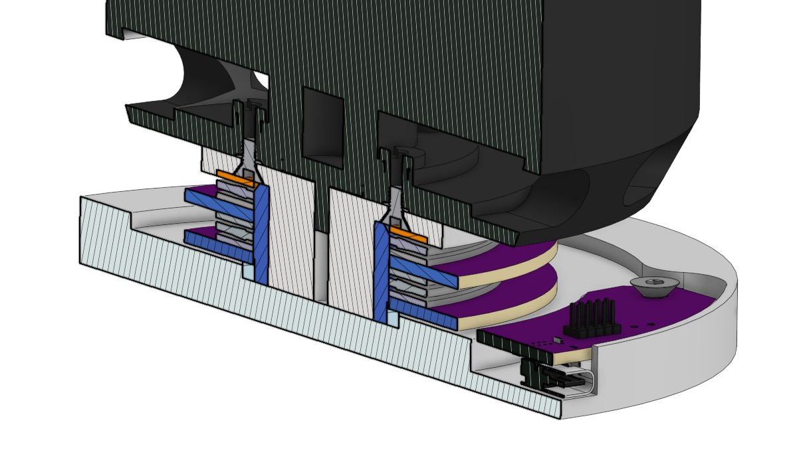
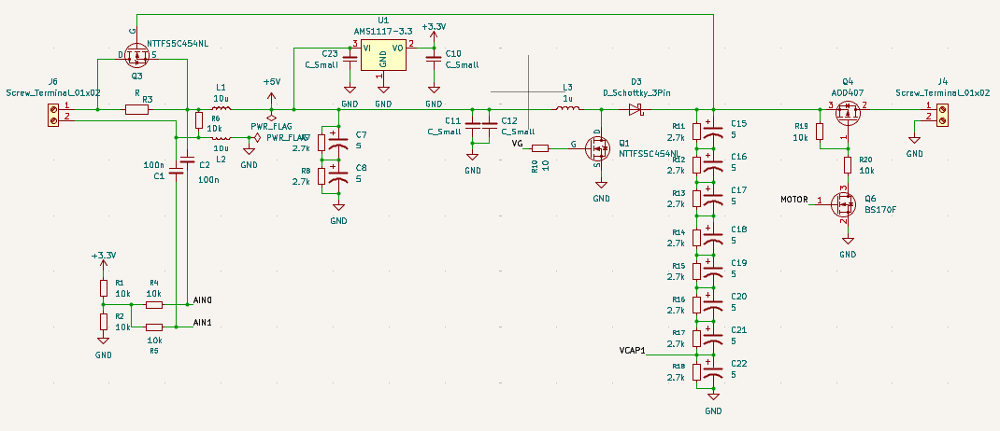
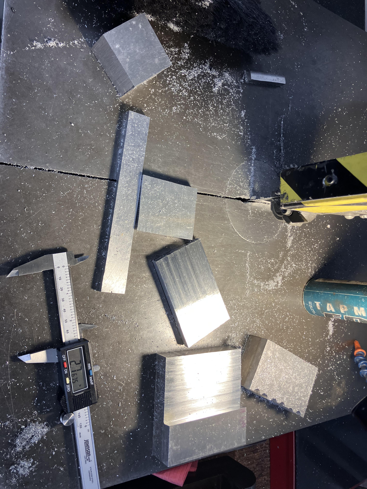
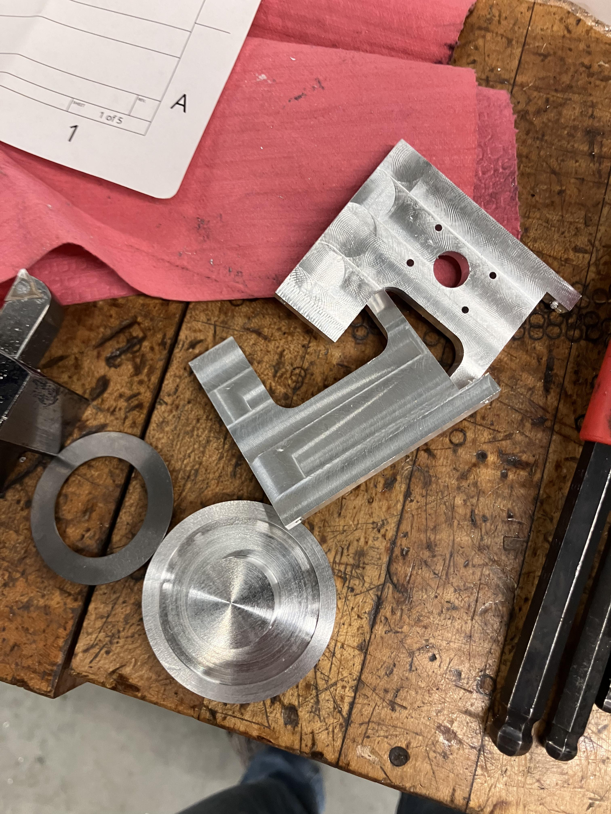
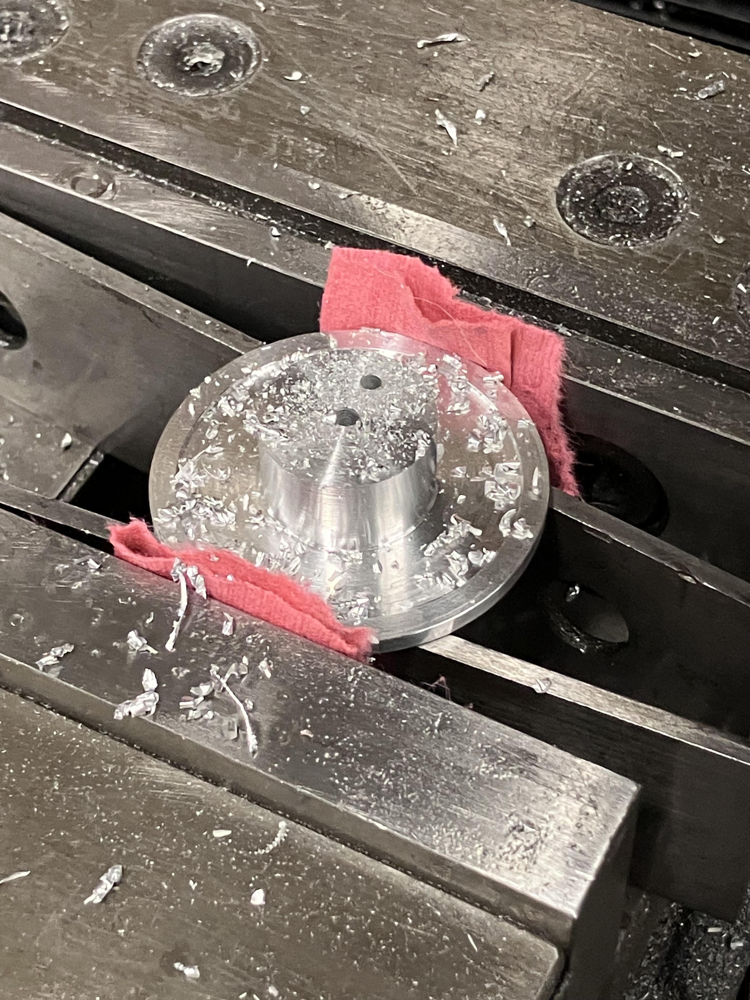
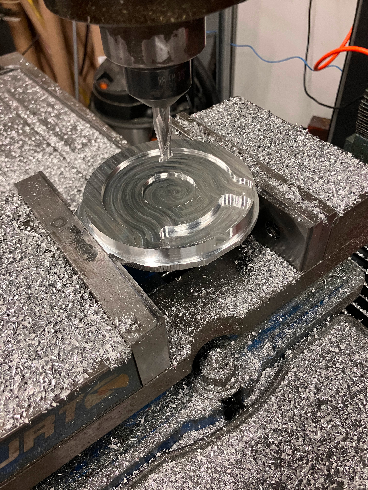
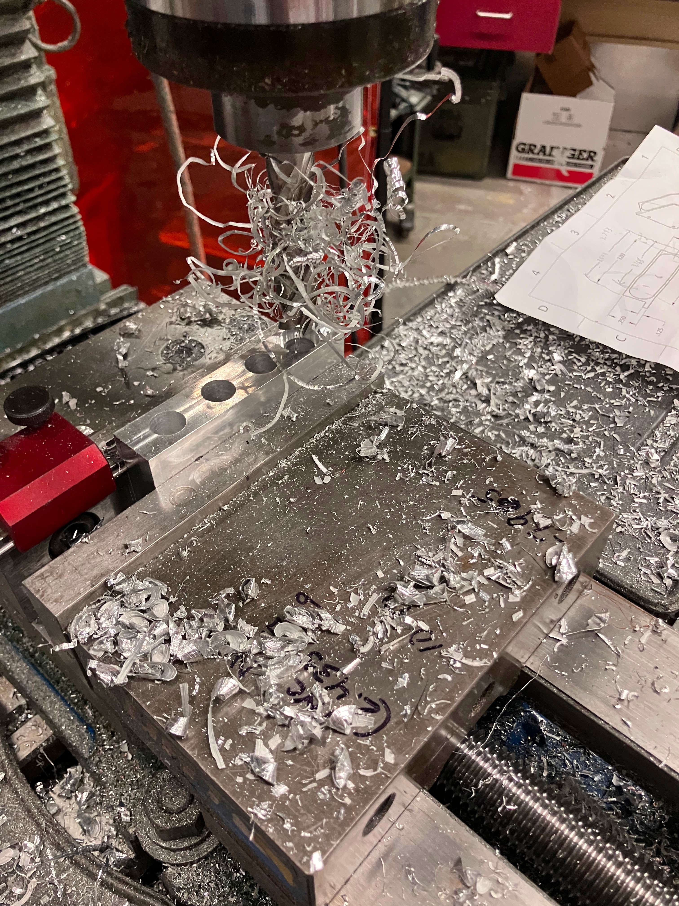
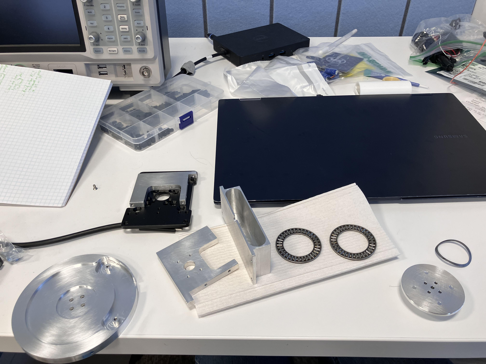

As any cat owner knows, it is frustratingly difficult to keep your cats off of your kitchen counter. I was inspired by The Lab-X's Video showing a robotic turret designed to keep their cat from jumping on the counter, and I decided to create my own version. I wanted a few additional features, which ended up driving the design in a direction that I did not anticipate. In particular, after some initial experiments with YoloV8, I realized that our cats pretty much only go on the counter at night, which pretty much rules out computer vision.
On top of that, the layout of our kitchen means there is no place for the robot to sit where the whole countertop is visible. This led me to decide that the robot should be able to rotate continuously, so I don't have to keep track of cables that might get twisted. Finally, I also decided that the robot should have very low standby power, and it should not use batteries, since it should be on all the time.
In order to allow the robot to work at night, I opted to use a low resolution thermal camera from Adafruit. This has just enough resolution to differentiate between humans and cats using some heuristics that I haven't worked out yet, but it's still pretty cheap. To cover all directions, the thermal camera needs to rotate with the water spraying mechanism, and the (relatively) high speed camera interface means the main controller ought to rotate with it. Powering this system continuously means I will need a slip ring of some kind. Unfortunately, none of the cheap, hobbyist slip rings are "hollow", and after some puzzling over the geometry, I concluded that it is not possible to use these slip rings with an on-axis motor that isn't hollow either.
Instead of starting over, I decided to make a DIY slip ring using a stack of thrust bearings. At low speeds and very low duty cycle, running these without lubricant shouldn't be a big problem since they are carrying very little load.

The slipring uses two thrust bearings - the bare minimum to get power to the rotating assembly on the top. Between the thrust bearings are two ring-shaped PCBs that provide electrical connections to the different sides. This assembly is bolted to the rotor (technically the stator in this design) of an ODrive motor that is certainly overkill for this project, but free by virtue of being leftover from another project.
This slipring design sets more constraints for the rest of the design. I am concerned that the slipring will weld itself together if I put a significant amount of current through it, and accelerating the large motor requires quite a bit of instantaneous power. The solution to this problem is to add a bank of supercacitors to the rotating electronics, which can be slowly charged through the slipring. Because the duty cycle is expected to be near zero, I can charge the capacitor bank very slowly and keep the current through the slipring down to a few milliamps. This also means that if I lose electrical contact through the slipring, the robot will continue working.
Finally, for testing cat-detecting firmware, I really wanted a way to communicate with the rotating electronics without adding a tether. This functionality is also important for handling spotty connections through the slipring - if the rotating part detects that the connection is lost, it can rotate itself a few degrees to try to reestablish the connection. Because I have only two contacts, the communication through the slipring uses a differential RS485-like protocol that is overlaid on the power. The electrical setup for the rotating board looks like this:

An initial pair of supercapacitors are charged slowly through a resistor to provide power for the microcontroller. This resistor is bypassed with a FET after the capacitor is charged. The differential input/outputs for communicating with the stationary base are AC-coupled to the two slipring connections. The microcontroller controls a boost converter that charges the high voltage supercapacitor stack that runs the motor. Using the microcontroller here means I can be smart about charging the larger capacitors only when enough power is available to keep the microcontroller on. On the other side of the slipring, a second microcontroller is connected the same way (without the capacitors or boost converter), and it provides a USB-C connection for communications and power.
The mechanical construction of the robot requires a number of aluminum parts to be machined. Rather than buy stock, I cut all of these parts out of one giant 1.25"x12"x12" aluminum plate I had from the Radio Society.

The central spindle was set up on a lathe, everything else involved pretty standard manual milling.
|
 |
 |
The only part that required CNC milling was the base, which used some curved pockets to make the base circuit board much cheaper. The water tank is milled out of a single piece, and required a fairly stressful slotting operation to get the thin walls I wanted.
|
 |
 |
After that, all the parts are ready for assembly.
